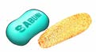
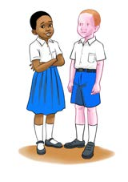
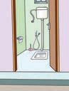
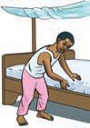

Ufahamu
Soma na ghani / Soma kimya utenzi ufuatao, kisha jibu maswali yanayofuata.
Usafi
1.
Leo nashika kalamu,
Kusema jambo muhimu,
La kukazia nidhamu,
Usafi kuzingatia.
2.
Wameshafunza walimu,
Usafi mada muhimu,
Bali hili somo gumu,
Nami nitaongezea.
3.
Usafi huwa ni kinga,
Ya maradhi yanozonga,
Ni waganga wamelonga,
Walimu wamekazia.
4.
KWANZA, usafi wa kinywa,
Ni muhimu kuambiwa,
Hukinga mengi magonjwa,
Rihi mbaya kuzuia.
5.
Ukiamka ‘subuhi,
Kupiga mswaki wahi,
Kabla ya staftahi,
Meno kwa dawa sugua.
6.
Unapopiga mswaki,
Safisha yote mabaki,
Ya chakula yalosaki,
Menoni yakagandia.
7.
Yasafishe meno sawa,
Uchafu wote suguwa,
Kwao mswaki na dawa,
Meno ya nyuma anzia.
8.
Pia ulimi sugua,
Kisha kinywa sukutua,
Watu watakukimbia,
Kama harufu watoa.
9.
PILI, usafi mwilini,
Oga tumia sabuni,
Dodoki likuauni,
Mwilio kusugulia.

10.
Uchafu haupendezi,
Oga ondoa kutuzi,
Sehemu zote za ngozi,
Na za siri zingatia.
11.
Mwili ukiwa nadhifu,
Viungo huwa kunjufu
Nawe huwa furahifu,
Usafi kufurahia.
12.
TATU, usafi wa nguo,
Ni muhimu kwa afyayo,
Sabuni ndo kifulio,
Nguozo kuzifulia.

13.
Nguo safi kivutio,
Nguo chafu kichefuo,
Usafi kila uchao,
Ni ada ya kuwania.
14.
Kijana utapendeza,
Usafi ukitimiza,
Lakini utachukiza,
Nguo chafu ukivaa.
15.
NNE, usafi shuleni,
Darasani na vyooni,
Mazingira ya shuleni,
Yawe nadhifu sikia.

16.
Fyeka nyasi viwanjani,
Fagia taka njiani,
Pawe safi vivulini,
Nawe utafurahia.
17.
Bustani za maua,
Vema kuzipangilia,
Pia kuzimwagilia,
Mimea itachanua.
18.
TANO, usafi nyumbani,
Wazazi wape auni,
Bafu, jiko na chooni,
Usafi iwe tabia.
19.
Kiwe safi chumba chako,
Ufue mashuka yako,
Tandika kitanda chako,
Unadhifu zingatia.

20.
Usafi kuzingatia,
Ni nidhamu ya murua,
Wazazi kusaidia,
Ni ya kuiga tabia.
21.
Mengi nimezungumza,
Bali mengi nimesaza,
Usafi nimehimiza,
Muhimu kuzingatia.